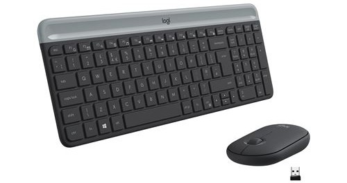
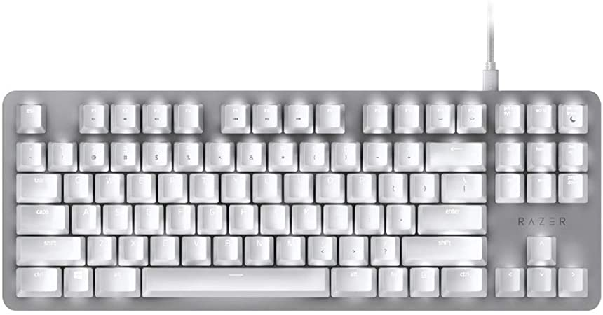
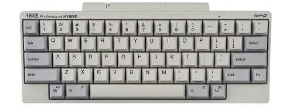

Pour vous accompagner dans votre travail votre clavier est votre meilleur allié dans cette sections nous vous proposons notre sélections des meilleurs claviers pour la bureautique, d’un clavier de bureau compact à un clavier de bureau silencieux en passant par un plus classique il y a forcement un clavier qui mérite d’être sur votre bureau.
Liste de nos meilleurs clavier bureautique

Logitech MK470
Ce clavier de bureau est le moins cher de notre gamme mais il ne fait pourtant aucune concession sur la qualité. Sans fil il n’encombrera pas votre espace de travail avec des câbles inutiles.

Razer Blackwidow Lite
Razer est une marque de clavier plutôt orientés pour les joueurs mais ne vous y trompés pas ce clavier mécanique compact sera parfait sur votre bureau. Avec son toucher exceptionnel et ses finitions haut de gamme travailler n’aura jamais été aussi agréable.

HHKB Hybrid Type-S
Ce clavier de bureau mécanique compact, silencieux et bluetooth a tout pour lui, quel est son problème ? Son prix, sa fabrication au Japon entraîne un surcoût conséquent et il n’adresse pas à tout le monde mais si vous cherchez un clavier qui vous accompagnera pour les nombreuses années à venir c’est un excellent choix.